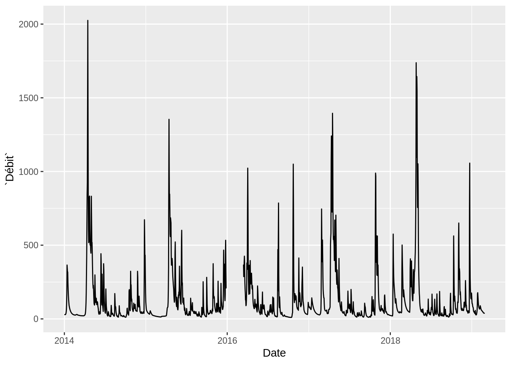
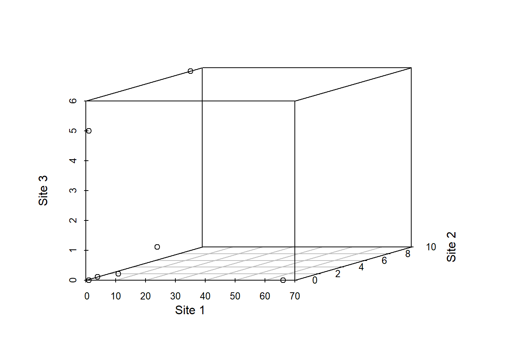
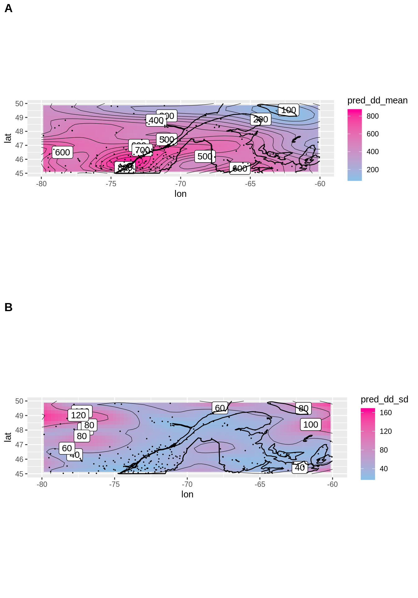
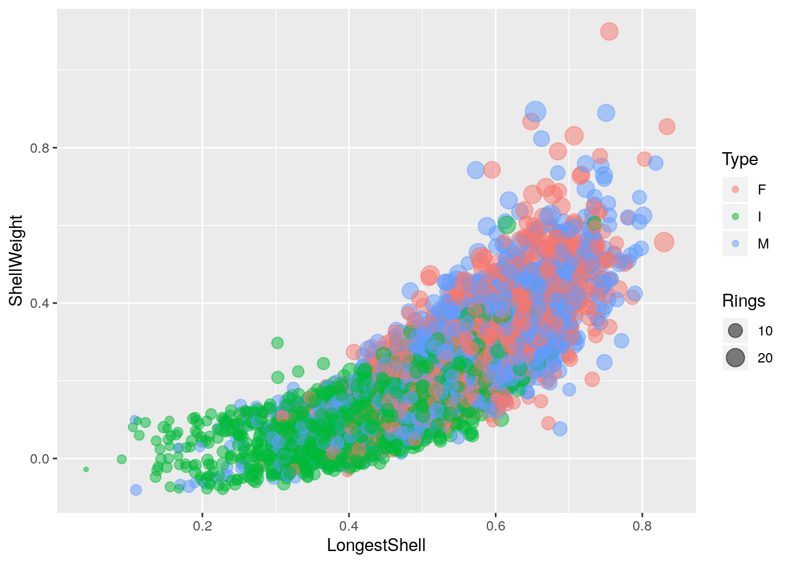
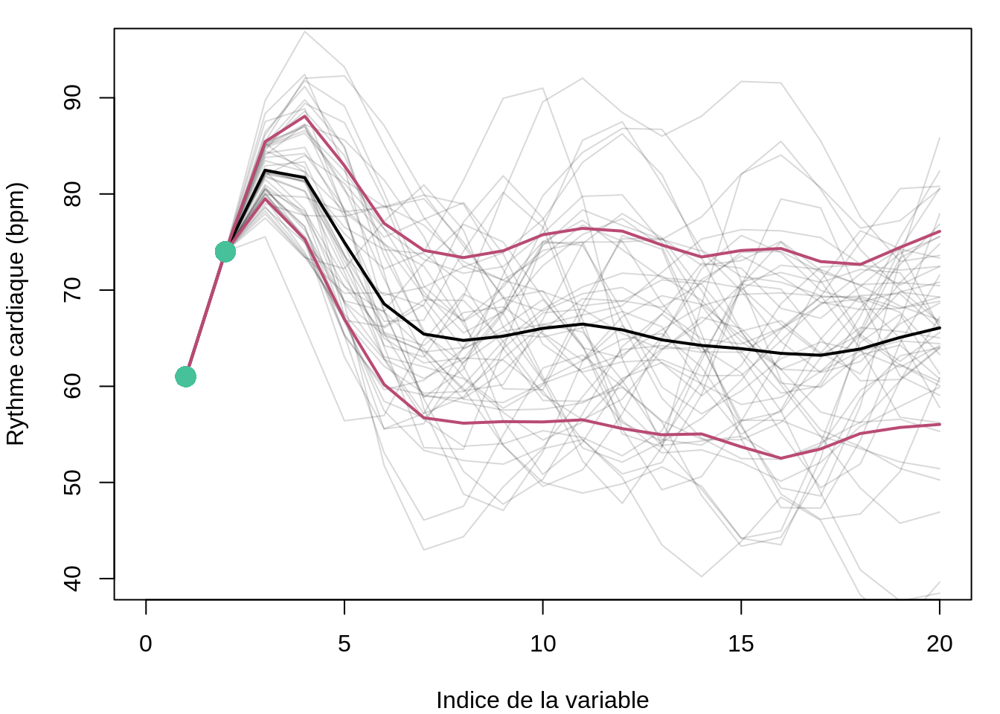
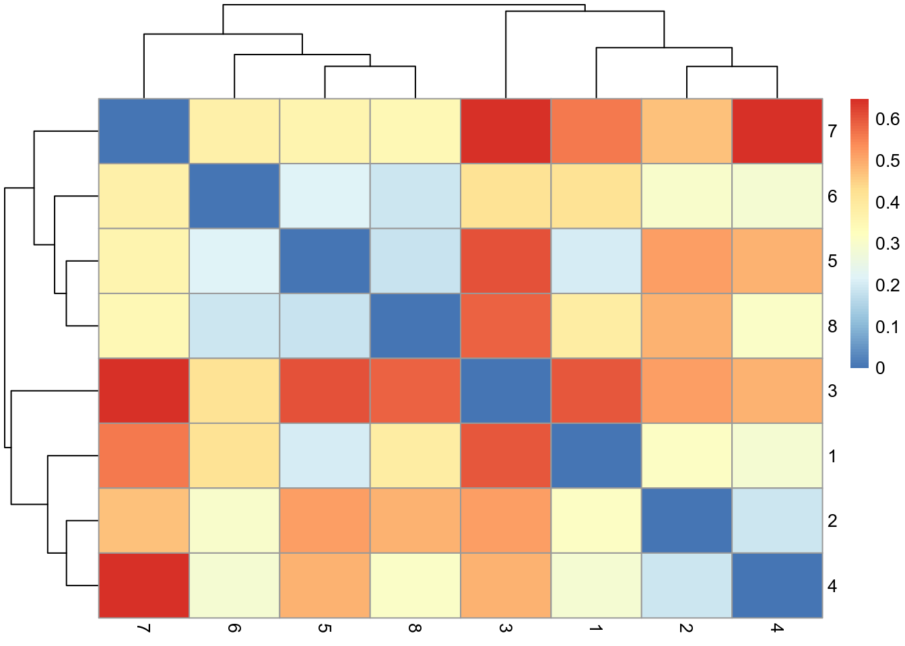
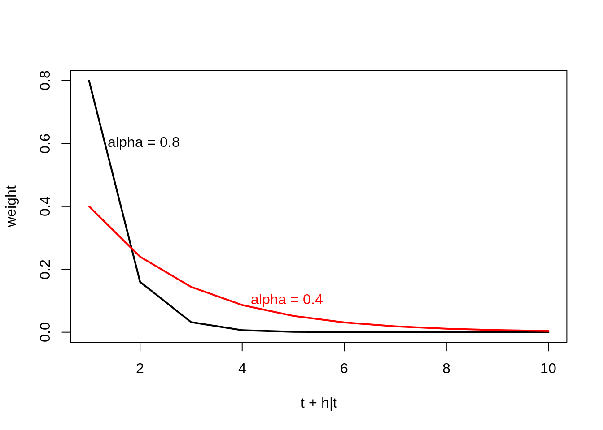

8 Association, partitionnement et ordination
️ Objectifs spécifiques:
À la fin de ce chapitre, vous
- serez en mesure d’effectuer des calculs permettant de mesurer des différence entre des observations, des groupes d’observation ou des variables observées
- serez en mesure d’effection des analyses de partitionnement hiérarchiques et non-hiérarchiques
- serez en mesure d’effectuer des calculs d’ordination à l’aide des techniques de réduction d’axe communes: analyse en composante principale, analyse discriminante linéaire, l’analyse de correspondance, l’analyse factorielle, l’analyse en coordonnées principales et l’analyse de redondance.
Introduction…
library("tidyverse")## ── Attaching packages ───────────────────────────────────────────────────────────────────────────────────────────────────────── tidyverse 1.2.1 ──## ✔ ggplot2 3.1.0 ✔ purrr 0.3.0
## ✔ tibble 2.0.1 ✔ dplyr 0.7.8
## ✔ tidyr 0.8.2 ✔ stringr 1.3.1
## ✔ readr 1.3.1 ✔ forcats 0.3.0## ── Conflicts ──────────────────────────────────────────────────────────────────────────────────────────────────────────── tidyverse_conflicts() ──
## ✖ dplyr::filter() masks stats::filter()
## ✖ dplyr::lag() masks stats::lag()8.1 Espaces d’analyse
8.1.1 Abondance et occurence
L’abondance est le décompte d’espèces observées, tandis que l’occurence est la présence ou l’absence d’une espèce. Le tableau suivant contient des données d’abondance.
abundance <- tibble('Bruant familier' = c(1, 0, 0, 3),
'Citelle à poitrine rousse' = c(1, 0, 0, 0),
'Colibri à gorge rubis' = c(0, 1, 0, 0),
'Geai bleu' = c(3, 2, 0, 0),
'Bruant chanteur' = c(1, 0, 5, 2),
'Chardonneret' = c(0, 9, 6, 0),
'Bruant à gorge blanche' = c(1, 0, 0, 0),
'Mésange à tête noire' = c(20, 1, 1, 0),
'Jaseur boréal' = c(66, 0, 0, 0))Ce tableau peut être rapidement transformé en données d’occurence, qui ne comprennent que l’information booléenne de présence (noté 1) et d’absence (noté 0).
occurence <- abundance %>%
transmute_all(funs(if_else(. > 0, 1, 0)))
occurence## # A tibble: 4 x 9
## `Bruant familie… `Citelle à poit… `Colibri à gorg… `Geai bleu`
## <dbl> <dbl> <dbl> <dbl>
## 1 1 1 0 1
## 2 0 0 1 1
## 3 0 0 0 0
## 4 1 0 0 0
## # … with 5 more variables: `Bruant chanteur` <dbl>, Chardonneret <dbl>,
## # `Bruant à gorge blanche` <dbl>, `Mésange à tête noire` <dbl>, `Jaseur
## # boréal` <dbl>L’espace des espèces (ou des variables ou descripteurs) est celui où les espèces forment les axes et où les sites sont positionnés dans cet espace. Il s’agit d’une perspective en mode R, qui permet principalement d’identifier quels espèces se retrouvent plus courrament ensemble.
library("scatterplot3d")
species <- c("Bruant chanteur", "Chardonneret", "Mésange à tête noire")
x <- abundance %>% pull(species[1])
y <- abundance %>% pull(species[2])
z <- abundance %>% pull(species[3])
scatterplot3d(x, y, z, angle = 20, asp = 0.3,
xlab = species[1], ylab = species[2], zlab = species[3])
Dans l’espace des sites (ou les échantillons ou objets), on transpose la matrice d’abondance. On passe ici en mode Q, où chaque point est une espèce, et où l’on peut observer quels échantillons sont similaires.
site1 <- t(abundance)[, 1]
site2 <- t(abundance)[, 2]
site3 <- t(abundance)[, 3]
scatterplot3d(site1, site2, site3, angle = 20, asp = 10,
xlab = "Site 1", ylab = "Site 2", zlab = "Site 3")
8.1.2 Environnement
L’espace de l’environnement comprend souvent un autre tableau contenant l’information sur l’environnement où se trouve les espèces: les coordonnées et l’élévation, la pente, le pH du sol, la pluviométrie, etc.
8.2 Analyse d’association
Nous utiliserons le terme association come une mesure pour quantifier la ressemblance ou la différence entre deux objets (échantillons) ou variables (descripteurs).
Alors que la corrélation et la covariance sont des mesures d’association entre des variables (analyse en mode R), la similarité et la distance sont deux types de une mesure d’association entre des objets (analyse en mode Q). Une distance de 0 est mesuré chez deux objets identiques. La distance augmente au fur et à mesure que les objets sont dissociés. Une similarité ayant une valeur de 0 indique aucune association, tandis qu’une valeur de 1 indique une association parfaite. À l’opposé, la dissimilarité est égale à 1-similarité.
La distance peut être liée à la similarité par la relation:
\[distance=\sqrt{1-similarité}\]
ou
\[distance=\sqrt{dissimilarité}\]
La racine carrée permet, pour certains indices de similarité, d’obtenir des propriétés euclédiennes. Pour plus de détails, voyez le tableau 7.2 de Legendre et Legendre (2012).
Les matrices d’association sont généralement présentées comme des matrices carrées, dont les dimensions sont égales au nombre d’objets (mode Q) ou de vrariables (mode R) dans le tableau. Chaque élément (“cellule”) de la matrice est un indice d’association entre un objet (ou une variable) et un autre. Ainsi, la diagonale de la matrice est un vecteur nul (distance ou dissimilarité) ou unitaire (similarité), car elle correspond à l’association entre un objet et lui-même.
Puisque l’association entre A et B est la même qu’entre B et A, et puisque la diagonale retourne une valeur convenue, il est possible d’exprimer une matrice d’association en mode “compact”, sous forme de vecteur. Le vecteur d’association entre des objets A, B et C contiendra toute l’information nécessaire en un vecteur de trois chiffres, [AB, AC, BC], plutôt qu’une matrice de dimension \(3 \times 3\). L’impact sur la mémoire vive peut être considérable pour les calculs comprenant de nombreuses dimensions.
En R, les calculs de similarité et de distances peuvent être effectués avec le module vegan. La fonction vegdist permet de calculer les indices d’association en forme carrée.
Nous verons plus tard les méthodes de mesure de similarité et de distance plus loin. Pour l’instant, utilisons la méthode de Jaccard pour une démonstration sur des données d’occurence.
library("vegan")## Loading required package: permute## Loading required package: lattice## This is vegan 2.5-4vegdist(occurence, method = "jaccard",
diag = TRUE, upper = TRUE)## 1 2 3 4
## 1 0.0000000 0.7777778 0.7500000 0.7142857
## 2 0.7777778 0.0000000 0.6000000 1.0000000
## 3 0.7500000 0.6000000 0.0000000 0.7500000
## 4 0.7142857 1.0000000 0.7500000 0.0000000Remarquez que vegdist retourne une matrice dont la diagonale est de 0 (on l’affiche en spécifiant diag = TRUE). La diagonale est l’association d’un objet avec lui-même. Or la similarité d’un objet avec lui-même devrait être de 1! En fait, par convention vegdist retourne des dissimilarités, non pas des similarités. La matrice de distance serait donc calculée en extrayant la racine carrée des éléments de la matrice de dissimilarité:
dissimilarity <- vegdist(occurence, method = "jaccard",
diag = TRUE, upper = TRUE)
distance <- sqrt(dissimilarity)
distance## 1 2 3 4
## 1 0.0000000 0.8819171 0.8660254 0.8451543
## 2 0.8819171 0.0000000 0.7745967 1.0000000
## 3 0.8660254 0.7745967 0.0000000 0.8660254
## 4 0.8451543 1.0000000 0.8660254 0.0000000Dans le chapitre sur l’analyse compositionnelle, nous avons abordé les significations différentes que peuvent prendre le zéro. L’information fournie par un zéro peut être différente selon les circonstances. Dans le cas d’une variable continue, un zéro signifie généralement une mesure sous le seuil de détection. Deux tissus dont la concentration en cuivre est nulle ont une afinité sous la perspective de la concentration en cuivre. Dans le cas de mesures d’abondance (décompte) ou d’occurence (présence-absence), on pourra décrire comme similaires deux niches écologiques où l’on retrouve une espèce en particulier. Mais deux sites où l’on de retouve pas d’ours polaires ne correspondent pas nécessairement à des niches similaires! En effet, il peut exister de nombreuses raisons écologiques et méthodologiques pour lesquelles l’espèces ou les espèces n’ont pas été observées. C’est le problème des double-zéros (espèces non observées à deux sites), problème qui est amplifié avec les grilles comprenant des espèces rares.
La ressemblance entre des objets comprenant des données continues devrait être calculée grâce à des indicateurs symétriques. Inversement, les affinités entre les objets décrits par des données d’abondance ou d’occurence susceptibles de générer des problèmes de double-zéros devraient être évaluées grâce à des indicateurs asymétriques. Un défi supplémentaire arrive lorsque les données sont de type mixte.
Nous utiliserons la convention de scipy et nous calculerons la dissimilarité, non pas la similarité. Les mesures de dissimilarité sont calculées sur des données d’abondance ou des données d’occurence. Notons qu’il existe beaucoup de confusion dans la littérature sur la manière de nommer les dissimilarités (ce qui n’est pas le cas des distances, dont les noms sont reconnus). Dans les sections suivantes, nous noterons la dissimilarité avec un \(d\) minuscule et la distance avec un \(D\) majuscule.
8.2.1 Association entre objets (mode Q)
8.2.1.1 Objets: Abondance
La dissimilarité de Bray-Curtis est asymétrique. Elle est aussi appelée l’indice de Steinhaus, de Czekanowski ou de Sørensen. Il est important de s’assurer de bien s’entendre la méthode à laquelle on fait référence. L’équation enlève toute ambiguité. La dissimilarité de Bray-Curtis entre les points A et B est calculée comme suit.
\[d_{AB} = \frac {\sum \left| A_{i} - B_{i} \right| }{\sum \left(A_{i}+B_{i}\right)}\]
Utilisons vegdist pour générer les matrices d’association. Le format “liste” de R est pratique pour enregistrer la collection d’objets, dont les matrice d’association que nous allons créer dans cette section.
associations_abund <- list()
associations_abund[['BrayCurtis']] <- vegdist(abundance, method = "bray")
associations_abund[['BrayCurtis']]## 1 2 3
## 2 0.9433962
## 3 0.9619048 0.4400000
## 4 0.9591837 1.0000000 0.7647059La dissimilarité de Bray-Curtis est souvent utilisée dans la littérature. Toutefois, la version originale de Bray-Curtis n’est pas tout à fait métrique (semimétrique). Conséquemment, la dissimilarité de Ruzicka (une variante de la dissimilarité de Jaccard pour les données d’abondance) est métrique, et devrait probablement être préféré à Bary-Curtis (Oksanen, 2006).
\[d_{AB, Ruzicka} = \frac { 2 \times d_{AB, Bray-Curtis} }{1 + d_{AB, Bray-Curtis}}\]
associations_abund[['Ruzicka']] <- associations_abund[['BrayCurtis']] * 2 / (1 + associations_abund[['BrayCurtis']])La dissimilarité de Kulczynski (aussi écrit Kulsinski) est asymétrique et semimétrique, tout comme celle de Bray-Curtis. Elle est calculée comme suit.
\[d_{AB} = 1-\frac{1}{2} \times \left[ \frac{\sum min(A_i, B_i)}{\sum A_i} + \frac{\sum min(A_i, B_i)}{\sum B_i} \right]\]
associations_abund[['Kulczynski']] <- vegdist(abundance, method = "kulczynski")Une approche commune pour mesurer l’association entre sites décrits par des données d’abondance est la distance de Hellinger. Notez qu’il s’agit ici d’une distance, non pas d’une dissimilarité. Pour l’obtenir, on doit d’abord diviser chaque donnée d’abondance par l’abondance totale pour chaque site pour obtenir les espèces en tant que proportions, puis on extrait la racine carrée de chaque élément. Enfin, on calcule la distance euclidienne entre les proportions de chaque site. Pour rappel, une distance euclidienne est la généralisation en plusieurs dimensions du théorème de Pythagore, \(c = \sqrt{a^2 + b^2}\).
\[D_{AB} = \sqrt {\sum \left( \frac{A_i}{\sum A_i} - \frac{B_i}{\sum B_i} \right)^2}\]
| 😱 Attention | La distance d’Hellinger hérite des biais liées aux données compositionnelles. Elle peut être substitiée par une matrice de distances d’Aitchison. |
associations_abund[['Hellinger']] <- dist(decostand(abundance, method="hellinger"))Toute comme la distance d’Hellinger, la distance de chord est calculée par une distance euclidienne sur des données d’abondance transformées de sorte que chaque ligne ait une longueur (norme) de 1.
associations_abund[['Chord']] <- dist(decostand(abundance, method="normalize"))La métrique du chi-carré, ou \(\chi\)-carré, ou chi-square, donne davantage de poids aux espèces rares qu’aux espèces communes. Son utilisation est recommandée lorsque les espèces rares sont de bons indicateurs de conditions écologiques particulières (Legendre et Legendre, 2012, p. 308).
\[ d_{AB} = \sqrt{\sum _j \frac{1}{\sum y_j} \left( \frac{A_j}{\sum A} - \frac{B_j}{\sum B} \right)^2 } \]
La métrique peut être transformée en distance en la multipliant par la racine carrée de la somme totale des espèces dans la matric d’abondance (\(X\)).
\[ D_{AB} = \sqrt{\sum X} \times d_{AB} \]
associations_abund[['ChiSquare']] <- dist(decostand(abundance, method="chi.square"))Une mannière visuellement plus intéressante de présenter une matrice d’association est un graphique de type heatmap.
associations_abund_df <- list()
for (i in 1:length(associations_abund)) {
associations_abund_df[[i]] <- data.frame(as.matrix(associations_abund[[i]]))
colnames(associations_abund_df[[i]]) <- rownames(associations_abund_df[[i]])
associations_abund_df[[i]]$row <- rownames(associations_abund_df[[i]])
associations_abund_df[[i]] <- associations_abund_df[[i]] %>% gather(key=row)
associations_abund_df[[i]]$column = rep(1:4, 4)
associations_abund_df[[i]]$dist <- names(associations_abund)[i]
}
associations_abund_df <- do.call(rbind, associations_abund_df)
ggplot(associations_abund_df, aes(x=row, y=column)) +
facet_wrap(. ~ dist, nrow = 2) +
geom_tile(aes(fill = value)) +
geom_text(aes(label = round(value, 2))) +
scale_fill_gradient2(low = "#00ccff", mid = "#aad400", high = "#ff0066", midpoint = 2) +
labs(x="Site", y="Site")
Peu importe le type d’association utilisée, les heatmaps montrent les mêmes tendances. Les assocaitions de dissimilarité (Bray-Curtis, Kulczynski et Ruzicka) s’étalent de 0 à 1, tandis que les distances (Chi-Square, Chord et Hellinger) partent de zéro, mais n’ont pas de limite supérieure. On note les plus grandes différences entre les sites 2 et 4, tandis que les sites 2 et 3 sont les plus semblables pour toutes les mesures d’association à l’exception de la dissimilarité de Kulczynski.
8.2.1.2 Objets: Occurence (présence-absence)
Des indices d’association différents devraient être utilisés lorsque des données sont compilées sous forme booléenne. En général, les tableaux de données d’occurence seront compilés avec des 1 (présence) et des 0 (absence).
La similarité de Jaccard entre le site A et le site B est la proportion de double 1 (présences de 1 dans A et B) parmi les espèces. La dissimilarié est la proportion complémentaire (comprenant [1, 0], [0, 1] et [0, 0]). La distance de Jaccard est la racine carrée de la dissimilarité.
associations_occ <- list()
associations_occ[['Jaccard']] <- vegdist(occurence, method = "jaccard")Les distances d’Hellinger, de chord et de chi-carré sont aussi appropriées pour les calculs de distances sur des tableaux d’occurence.
associations_occ[['Hellinger']] <- dist(decostand(occurence, method="hellinger"))
associations_occ[['Chord']] <- dist(decostand(occurence, method="normalize"))
associations_occ[['ChiSquare']] <- dist(decostand(occurence, method="chi.square"))Graphiquement,
associations_occ_df <- list()
for (i in 1:length(associations_occ)) {
associations_occ_df[[i]] <- data.frame(as.matrix(associations_occ[[i]]))
colnames(associations_occ_df[[i]]) <- rownames(associations_occ_df[[i]])
associations_occ_df[[i]]$row <- rownames(associations_occ_df[[i]])
associations_occ_df[[i]] <- associations_occ_df[[i]] %>% gather(key=row)
associations_occ_df[[i]]$column = rep(1:4, 4)
associations_occ_df[[i]]$dist <- names(associations_occ)[i]
}
associations_occ_df <- do.call(rbind, associations_occ_df)
ggplot(associations_occ_df, aes(x=row, y=column)) +
facet_wrap(. ~ dist) +
geom_tile(aes(fill = value)) +
geom_text(aes(label = round(value, 2))) +
scale_fill_gradient2(low = "#00ccff", mid = "#aad400", high = "#ff0066", midpoint = 1) +
labs(x="Site", y="Site")
Il est attendu que les matrices d’association sur l’occurence sont semblables à celles sur l’abondance. Dans ce cas-ci, la distance d’Hellinger donne des résultats semblables à la dissimilarité de Jaccard.
8.2.1.3 Objets: Données quantitatives
Les données quantitative en écologie peuvent décrire l’état de l’environnement: le climat, l’hydrologie, l’hydrogéochimie, la pédologie, etc. En règle générale, les coordonnées des sites ne sot pas des variables environnementales, à que l’on soupçonne la coordonnée elle-même d’être responsable d’effets sur notre système: mais il s’agira la plupart du temps d’effets confondants (par exemple, on peut mesurer un effet de lattitude sur le rendement des agrumes, mais il s’agira probablement avant tout d’effets dus aux conditions climatiques, qui elles changent en fonction de la lattitude). D’autre types de données quantitative pouvant être appréhendées par des distances sont les traits phénologiques, les ionomes, les génomes, etc.
La distance euclidienne est la racine carrée de la somme des carrés des distances sur tous les axes. Il s’agit d’une application multidimensionnelle du théorème de Pythagore. La distance d’Aitchison, couverte dans le chapitre 6, est une distance euclidienne calculée sur des données compositionnelles préalablement transformées. La distance euclidienne est sensible aux unités utilisés: utiliser des milimètres plutôt que des mètres enflera la distance euclidienne. Il est recommandé de porter une attention particulière aux unités, et de standardiser les données au besoin (par exemple, en centrant la moyenne à zéro et en fixant l’écart-type à 1).
On pourrait, par exemple, mesurer la distance entre des observations des dimensions de différentes espèces d’iris. Ce tableau est inclu dans R par défaut.
data(iris)
iris %>% sample_n(5)## Sepal.Length Sepal.Width Petal.Length Petal.Width Species
## 110 7.2 3.6 6.1 2.5 virginica
## 7 4.6 3.4 1.4 0.3 setosa
## 99 5.1 2.5 3.0 1.1 versicolor
## 67 5.6 3.0 4.5 1.5 versicolor
## 92 6.1 3.0 4.6 1.4 versicolorLes mesures du tableau sont en centimètres. Pour éviter de donner davantage de poids aux longueur des sépales et en même temps de négliger la largeur des pétales, nous allons standardiser le tableau.
iris_sc <- iris %>%
select(-Species) %>%
scale(.)%>%
as_tibble(.) %>%
mutate(Species = iris$Species)
iris_sc## # A tibble: 150 x 5
## Sepal.Length Sepal.Width Petal.Length Petal.Width Species
## <dbl> <dbl> <dbl> <dbl> <fct>
## 1 -0.898 1.02 -1.34 -1.31 setosa
## 2 -1.14 -0.132 -1.34 -1.31 setosa
## 3 -1.38 0.327 -1.39 -1.31 setosa
## 4 -1.50 0.0979 -1.28 -1.31 setosa
## 5 -1.02 1.25 -1.34 -1.31 setosa
## 6 -0.535 1.93 -1.17 -1.05 setosa
## 7 -1.50 0.786 -1.34 -1.18 setosa
## 8 -1.02 0.786 -1.28 -1.31 setosa
## 9 -1.74 -0.361 -1.34 -1.31 setosa
## 10 -1.14 0.0979 -1.28 -1.44 setosa
## # … with 140 more rowsPour les comparaisons des dimensions, prenons la moyenne des dimensions (mises à l’échelle) par espèce.
iris_means <- iris_sc %>%
group_by(Species) %>%
summarise_all(mean) %>%
select(-Species)
iris_means## # A tibble: 3 x 4
## Sepal.Length Sepal.Width Petal.Length Petal.Width
## <dbl> <dbl> <dbl> <dbl>
## 1 -1.01 0.850 -1.30 -1.25
## 2 0.112 -0.659 0.284 0.166
## 3 0.899 -0.191 1.02 1.08Nous pouvons utiliser la distance euclidienne, commune en géométrie, pour comparer les espèces. La distance euclidienne est calculée comme suit.
\[ \mathcal{E} = \sqrt{\Sigma_i \left( A_i - B_i \right) ^2 } \]
associations_cont = list()
associations_cont[['Euclidean']] <- dist(iris_sc %>% select(-Species), method="euclidean")La distance de Mahalanobis est semblable à la distance euclidienne, mais qui tient compte de la covariance de la matrice des objets. Cette covariance peut être utilisée pour décrire la structure d’un nuage de points. La figure suivante montre deux points verts qui se trouvent aux extrêmes d’un nuage de point. Ces points ont des distances euclidiennes par rapport au centre différentes: les lignes d’équidistance euclédienne sont tracées en rose. Toutefois, les deux points ont un distance de Mahalanobis égale à partir du centre.

Source: Parent et al. (2012).
La diastance de Mahalanobis se calcule comme suit.
\[\mathcal{M} = \sqrt{(A - B)^T S^{-1} (A-B)}\]
Notez qu’il s’agit d’une généralisation de la distance euclidienne, qui équivaut à une distance de Mahalanobis dont la matrice de covariance est une matrice identité.
La distance de Mahalanobis permet de représenter des distances dans un espace fortement corrélé. Elle est courramment utilisée pour détecter les valeurs aberrantes selon des critères de distance à partir du centre d’un jeu de données multivariées.
associations_cont[['Mahalanobis']] <- vegdist(iris_sc %>% select(-Species), 'mahalanobis')La distance de Manhattan porte aussi le nom de distance de cityblock ou de taxi. C’est la distance que vous devrez parcourir pour vous rendre du point A au point B à Manhattan, c’est-à-dire selon une séquence de tronçons perpendiculaires.
\[ D_{AB} = \sum _i \left| A_i - B_i \right| \]
La distance de Manhattan est appropriée lorsque les gradients (changements d’un état à l’autre ou d’une région à l’autre) ne permettent pas des changements simultanés. Mieux vaut standardiser les variables pour éviter qu’une dimension soit prépondérante.
associations_cont[['Manhattan']] <- vegdist(iris_sc %>% select(-Species), 'manhattan')Graphiquement
associations_cont_df <- list()
for (i in 1:length(associations_cont)) {
associations_cont_df[[i]] <- data.frame(as.matrix(associations_cont[[i]]))
colnames(associations_cont_df[[i]]) <- rownames(associations_cont_df[[i]])
associations_cont_df[[i]]$row <- rownames(associations_cont_df[[i]])
associations_cont_df[[i]] <- associations_cont_df[[i]] %>% gather(key=row)
associations_cont_df[[i]]$column = rep(1:nrow(iris), nrow(iris))
associations_cont_df[[i]]$dist <- names(associations_cont)[i]
}
associations_cont_df <- do.call(rbind, associations_cont_df)
ggplot(associations_cont_df, aes(x=row, y=column)) +
facet_wrap(. ~ dist) +
geom_tile(aes(fill = value), colour = NA) +
#geom_text(aes(label = round(value, 2))) +
scale_fill_gradient2(low = "#00ccff", mid = "#aad400", high = "#ff0066", midpoint = 5) +
labs(x="Site", y="Site")
Le tableau iris est ordonné par espèce. Les distances euclidienne et de Manhattan permettent aisément de distinguer les espèces selon les dimensions des pétales et des sépales. Toutefois, l’utilsation de la covariance avec la distance de Mahalanobis crée des distinction moins tranchées.
8.2.1.4 Objets: Données mixtes
Les données catégorielles ordinales peuvent être transformées en données continues par gradations linéaires ou quadratiques. Les données catégorielles nominales, quant à elles, peuvent être dummyfiées en données similaires à des occurences. Attention toutefois: contrairement à la régression linéaire qui demande d’exclure une catégorie, la dummyfication doit inclure toutes les catégories. Le comportement par défaut de la fonction pandas.get_dummies est de garder toutes les catégories. La similarité de Gower a été développée pour mesurer des associations entre des objets dont les données sont mixtes: booléennes, catégorielles et continues. La similarité de Gower est calculée en additionnant les distances calculées par colonne, individuellement. Si la colonne est booléenne, on utilise les distances de Jaccard (qui exclue les double-zéro) de manière univariée: une variable à la fois. Pour les variables continues, on utilise la distance de Manhattan divisée par la plage de valeurs de la variable (pour fin de standardisation). Puisqu’elle hérite de la particularité de la distance de Manhattan et de la similarité de Jaccard univariée, la similarité de Gower reste une combinaison linéaire de distances univariées.
X <- tibble(ID = 1:8,
age = c(21, 21, 19, 30, 21, 21, 19, 30),
gender = c('M','M','N','M','F','F','F','F'),
civil_status = c('MARRIED','SINGLE','SINGLE','SINGLE','MARRIED','SINGLE','WIDOW','DIVORCED'),
salary = c(3000.0,1200.0 ,32000.0,1800.0 ,2900.0 ,1100.0 ,10000.0,1500.0),
children = c(TRUE, FALSE, TRUE, TRUE, TRUE, TRUE, FALSE, TRUE),
available_credit = c(2200,100,22000,1100,2000,100,6000,2200))
X## # A tibble: 8 x 7
## ID age gender civil_status salary children available_credit
## <int> <dbl> <chr> <chr> <dbl> <lgl> <dbl>
## 1 1 21 M MARRIED 3000 TRUE 2200
## 2 2 21 M SINGLE 1200 FALSE 100
## 3 3 19 N SINGLE 32000 TRUE 22000
## 4 4 30 M SINGLE 1800 TRUE 1100
## 5 5 21 F MARRIED 2900 TRUE 2000
## 6 6 21 F SINGLE 1100 TRUE 100
## 7 7 19 F WIDOW 10000 FALSE 6000
## 8 8 30 F DIVORCED 1500 TRUE 2200Il faut préalablement dummifier les variables catégorielles nominales.
X_dum <- model.matrix(~ 0 + ., X[, -1])
X_dum## age genderF genderM genderN civil_statusMARRIED civil_statusSINGLE
## 1 21 0 1 0 1 0
## 2 21 0 1 0 0 1
## 3 19 0 0 1 0 1
## 4 30 0 1 0 0 1
## 5 21 1 0 0 1 0
## 6 21 1 0 0 0 1
## 7 19 1 0 0 0 0
## 8 30 1 0 0 0 0
## civil_statusWIDOW salary childrenTRUE available_credit
## 1 0 3000 1 2200
## 2 0 1200 0 100
## 3 0 32000 1 22000
## 4 0 1800 1 1100
## 5 0 2900 1 2000
## 6 0 1100 1 100
## 7 1 10000 0 6000
## 8 0 1500 1 2200
## attr(,"assign")
## [1] 1 2 2 2 3 3 3 4 5 6
## attr(,"contrasts")
## attr(,"contrasts")$gender
## [1] "contr.treatment"
##
## attr(,"contrasts")$civil_status
## [1] "contr.treatment"
##
## attr(,"contrasts")$children
## [1] "contr.treatment"Calculons la dissimilarité de Gower (cette fois le graphique est fait avec pheatmap).
library("pheatmap")
d_gow <- as.matrix(vegdist(X_dum, 'gower'))
colnames(d_gow) <- rownames(d_gow) <- X$ID
pheatmap(d_gow)
Les dendrogrammes apparaissants sur les axes du graphique sont issus d’un processus de partitionnement basé sur la distance, que nous verrons plus loin dans ce chapiter. Les profils des clients 4 et 7, ainsi que ceux des clients 3 et 7 diffèrent le plus. Les profils 3 et 4 sont néanmoins plutôt différents.
8.2.2 Associations entre variables (mode R)
Il existe de nombreuses approches pour mesurer les associations entre variables. La plus connue est la corrélation. Mais les données d’abondance et d’occurence demandent des approches différentes.
8.2.2.1 Variables: Abondance
La distance du chi-carré est suggérée par Borcard et al. (2011).
abundance_r <- t(abundance)
D_chisq_R <- as.matrix(dist(decostand(abundance_r, method="chi.square")))
pheatmap(D_chisq_R, display_numbers = round(D_chisq_R, 2))
Des coabondances sont notables pour la mésange à tête noire, le jaseur boréal, la citelle à poitrine rousse et le bruant à gorge blanche (tache bleu au centre).
8.2.2.2 Variables: Occurence
La dissimilarité de Jaccard peut être utilisée.
occurence_r <- t(occurence)
D_jacc_R <- as.matrix(vegdist(occurence_r, method = "jaccard"))
pheatmap(D_jacc_R, display_numbers = round(D_jacc_R, 2))
Des cooccurences sont notables pour le jaseur boréal, la citelle à poitrine rousse et le bruant à gorge blanche (tache bleu au centre).
8.2.2.3 Variables: Quantités
La matrice des corrélations de Pearson peut être utilisée pour les données continues. Quant aux variables ordinales, elles devraient idéalement être liées linéairement ou quadratiquement. Si ce n’est pas le cas, c’est-à-dire que les catégories sont ordonnées par rang seulement, vous pourrez avoir recours aux coefficients de corrélation de Spearman ou de Kendall.
iris_cor <- iris %>%
select(-Species) %>%
cor(.)
pheatmap(iris_cor, cluster_rows = FALSE, cluster_cols = FALSE,
display_numbers = round(iris_cor, 2))
8.2.3 Conclusion sur les associations
Il n’existe pas de règle claire pour déterminer quelle technique d’association utiliser. Cela dépend en premier lieu de vos données. Vous sélectionnerez votre méthode d’association selon le type de données que vous abordez, la question à laquelle vous désirez répondre ainsi l’expérience dans la littérature comme celle de vos collègues scientifiques. S’il n’existe pas de règle clair, c’est qu’il existe des dizaines de méthodes différentes, et la plupart d’entre elles vous donneront une perspective juste et valide. Il faut néanmoins faire attention pour éviter de sélectionner les méthodes qui ne sont pas appropriées.
8.3 Partitionnement
Les données suivantes ont été générées par Leland McInnes (Tutte institute of mathematics, Ottawa). Êtes-vous en mesure d’identifier des groupes? Combien en trouvez-vous?
df_mcinnes <- read_csv("data/clusterable_data.csv", col_names = c("x", "y"), skip = 1)## Parsed with column specification:
## cols(
## x = col_double(),
## y = col_double()
## )ggplot(df_mcinnes, aes(x=x, y=y)) + geom_point() + coord_fixed()
En 2D, l’oeil humain peut facilement détecter les groupes. En 3D, c’est toujours possible, mais au-delà de 3D, le partitionnement cognitive devient rapidement maladroite. Les algorithmes sont alors d’une aide précieuse. Mais ils transportent en pratique tout un baggage de limitations. Quel est le critère d’association entre les groupes? Combien de groupe devrions-nous créer? Comment distinguer une donnée trop bruitée pour être classifiée?
Le partitionnement de données (clustering en anglais), et inversement leur regroupement, permet de créer des ensembles selon des critères d’association. On suppose donc que Le partitionnement permet de créer des groupes selon l’information que l’on fait émerger des données. Il est conséquemment entendu que les données ne sont pas catégorisées à priori: il ne s’agit pas de prédire la catégorie d’un objet, mais bien de créer des catégories à partir des objets par exemple selon leurs dimensions, leurs couleurs, leurs signature chimique, leurs comportements, leurs gènes, etc.
Plusieurs méthodes sont aujourd’hui offertes aux analystes pour partitionner leurs données. Dans le cadre de ce manuel, nous couvrirons ici deux grandes tendances dans les algorithmes.
Méthodes hiérarchique et non hiérarchiques. Dans un partitionnement hiérarchique, l’ensemble des objets forme un groupe, comprenant des sous-regroupements, des sous-sous-regroupements, etc., dont les objets forment l’ultime partitionnement. On pourra alors identifier comment se décline un partitionnement. À l’inverse, un partitionnement non-hiérarchique des algorhitmes permettent de créer les groupes non hiérarchisés les plus différents que possible.
Membership exclusif ou flou. Certaines techniques attribuent à chaque une classe unique: l’appartenance sera indiquée par un 1 et la non appartenance par un 0. D’autres techniques vont attribuer un membership flou où le degré d’appartenance est une variable continue de 0 à 1. Parmi les méthodes floues, on retrouve les méthodes probabilistes.
8.3.1 Évaluation d’un partitionnement
Le choix d’une technique de partitionnement parmi de nombreuses disponibles, ainsi que le choix des paramètres gouvernant chacune d’entre elles, est avant tout basé sur ce que l’on désire définir comme étant un groupe, ainsi que la manière d’interpréter les groupes. En outre, le nombre de groupe à départager est toujours une décision de l’analyste. Néanmoins, on peut se fier des indicateurs de performance de partitionnement. Parmis ceux-ci, retenons le score silouhette ainsi que l’indice de Calinski-Harabaz.
8.3.1.1 Score silouhette
En anglais, le h dans silouhette se trouve après le l: on parle donc de silhouette coefficient pour désigner le score de chacun des objets dans le partitionnement. Pour chaque objet, on calcule la distance moyenne qui le sépare des autres points de son groupe (\(a\)) ainsi que la distance moyenne qui le sépare des points du groupe le plus rapproché.
\[s = \frac{b-a}{max \left(a, b \right)}\]
Un coefficient de -1 indique le pire classement, tandis qu’un coefficient de 1 indique le meilleur classement. La moyenne des coefficients silouhette est le score silouhette.
8.3.1.2 Indice de Calinski-Harabaz
L’indice de Calinski-Harabaz est proportionnel au ratio des dispersions intra-groupe et la moyenne des dispersions inter-groupes. Plus l’indice est élevé, mieux les groupes sont définis. La mathématique est décrite dans la documentation de scikit-learn.
Note. Les coefficients silouhette et l’indice de Calinski-Harabaz sont plus appropriés pour les formes de groupes convexes (cercles, sphères, hypersphères) que pour les formes irrégulières (notamment celles obtenues par la DBSCAN, discutée ci-desssous).
8.3.2 Partitionnement non hiérarchique
Il peut arriver que vous n’ayez pas besoin de comprendre la structure d’agglomération des objets (ou variables). Plusieurs techniques de partitionnement non hiérarchique sont disponibles dans le module scikit-learn. On s’intéressera en particulier à celles-ci.
Kmeans (sklearn.cluster.Kmeans). L’objectif des kmeans est de minimiser la distance euclédienne entre un nombre prédéfini de k groupes exclusifs.
- L’algorhitme commence par placer une nombre k de centroides au hasard dans l’espace d’un nombre p de variables (vous devez fixer k, et p est le nombre de colonnes de vos données).
- Ensuite, chaque objet est étiquetté comme appartenant au groupe du centroid le plus près.
- La position du centroide est déplacée à la moyenne de chaque groupe.
- Recommencer à partir de l’étape 2 jusqu’à ce que l’assignation des objets aux groupes ne change plus.

La technique des kmeans suppose que les groupes ont des distributions multinormales - représentées par des cercles en 2D, des sphères en 3D, des hypersphères en plus de 3D. Cette limitation est problématique lorsque les groupes se présentent sous des formes irrégulières, comme celles du nuage de points de Leland McInnes, présenté plus haut. De plus, la technique classique des kmeans est basée sur des distances euclidiennes: l’utilisation des kmeans n’est appropriée pour les données comprenant beaucoup de zéros, comme les données d’abondance, qui devraient préalablement être transformées en variables centrées et réduites (Legendre et Legendre, 2012). La technique des mixtures gaussiennes (gaussian mixtures, sklearn.mixture.GaussianMixture) est une généralisation des kmeans permettant d’intégrer la covariance des groupes. Les groupes ne sont plus des hyper-sphères, mais des hyper-ellipsoïdes.
DBSCAN. La technique DBSCAN (* Density-Based Spatial Clustering of Applications with Noise) sousentend que les groupes sont composés de zones où l’on retrouve plus de points (zones denses) séparées par des zones de faible densité. Pour lancer l’algorithme, nous devons spécifier une mesure d’association critique (distance ou dissimilarité) d* ainsi qu’un nombre de point critique k dans le voisinage de cette distance.
L’algorithme comme étiqueter chaque point selon l’une de ces catégories:
- Noyau: le point a au moins k points dans son voisinage, c’est-à-dire à une distance inférieure ou égale à d.
- Bordure: le point a moins de k points dans son voisinage, mais l’un de des points voisins est un noyau.
- Bruit: le cas échéant. Ces points sont considérés comme des outliers.

Les noyaux distancés de d ou moins sont connectés entre eux en englobant les bordures.

Le nombre de groupes est prescrit par l’algorithme DBSCAN, qui permet du coup de détecter des données trop bruitées pour être classées.
Damiani et al. (2014) a développé une approche utilisant la technique DBSCAN pour partitionner des zones d’escale pour les flux de populations migratoires.
8.3.2.1 Application
`———
Dans scikit-learn, on définit d’abord le modèle (par exemple Kmeans(...)), puis on l’applique à nos données (fit(...)), enfin on applique le modèle sur des données (predict(...)). Certaines fonctions utilisent toutefois le raccourcis fit_predict. Chaque algorithme doit être ajusté avec les paramètres qui convient. De nombreux paramètres par défaut sont utilisés dans les exécutions ci-dessous. Lors de travaux de recherche, l’utilsation d’un argument ou d’un autre dans une fonction doit être justifié: qu’un paramètre soit utilisé par défaut dans une fonction n’est a priori pas une justification convainquante.
``{r} mcinnes_kmeans_labels <- kmeans(x=df_mcinnes, centers = 3)$cl silhouette(mcinnes_kmeans_labels, dist = vegdist(df_mcinnes, method = “euclidean”)) ```
D